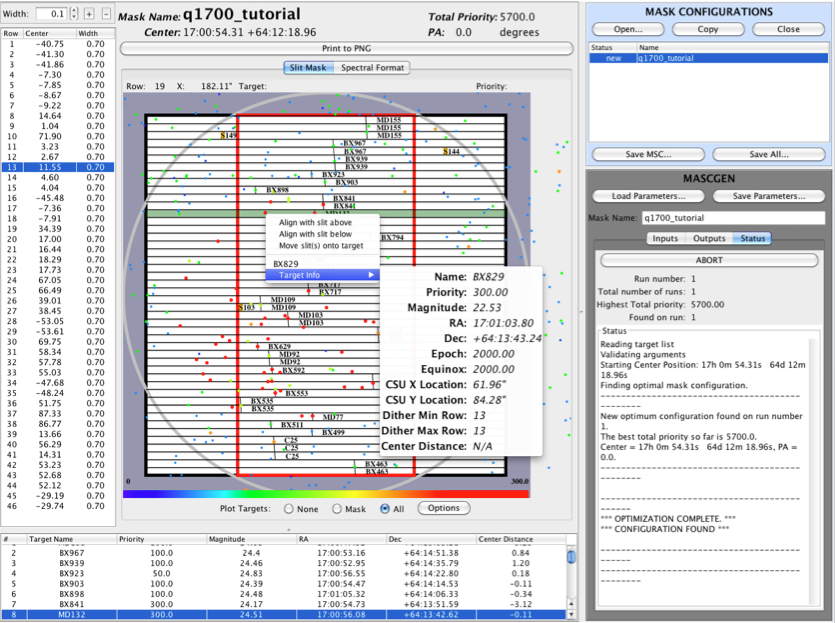

Modifying Mask Configurations
Mask configurations can be modified in the following ways:
Adjusting the slit width
The slit width of the mask can be adjusted for all slits simultaneously by changing the slit width value in the upper left corner of the GUI. Set the amount to increment by in arcseconds simply by entering it directly into the text box or hit the up or down arrow buttons on the spinner. To enact the change hit the + or - button to increase the slit widths by the set increment. The minimum slit width is 0.2 arcsec.
To change the slit width of an individual slit, double click the slit width
cell for a given row in the slit table on the left side of MAGMA.
The slit width must be the same for all slits on a single science object. Editing a value for one row will automatically set all of the rows
for that slit to the same value.
Aligning slits with a different object
MAGMA will create a mask that has the highest priority setting with the given list of objects. Even so, there may still be objects that you wish to include on your mask that MAGMA did not include. To change objects on a completed mask, click the 'All' button at the bottom of the Mask Visualization Panel. This will display all objects that are in your target list in the MOSFIRE field of view. To change to a new object, right click on the object you wish to place in your mask. A panel will appear that contains the objects name. You can look at the objects information by placing your mouse over 'Target Info'. If you want to put the slit on this object instead of the the current object, simply click 'Move slit(s) onto target'. This action will use however many bars are needed to make your new object have the correct dither space. This may invalidate a different object in the mask. If this occurs it will turn that object's name red.

Aligning slits with neighbors
Any slit can be moved such that it is aligned with its neighbor above it or below it. This is done by right-clicking on the row of the slit you want to move, and then clicking on the appropriate option. If a slit is part of a multiple row slit, moving it may invalidate the original slit it was a part of. If this happens, the object name will turn red.
Changing the name of the configuration
As described in the Managing Mask Configurations page, the name of a configuration can be changed by double-clicking on the name of a selected mask.